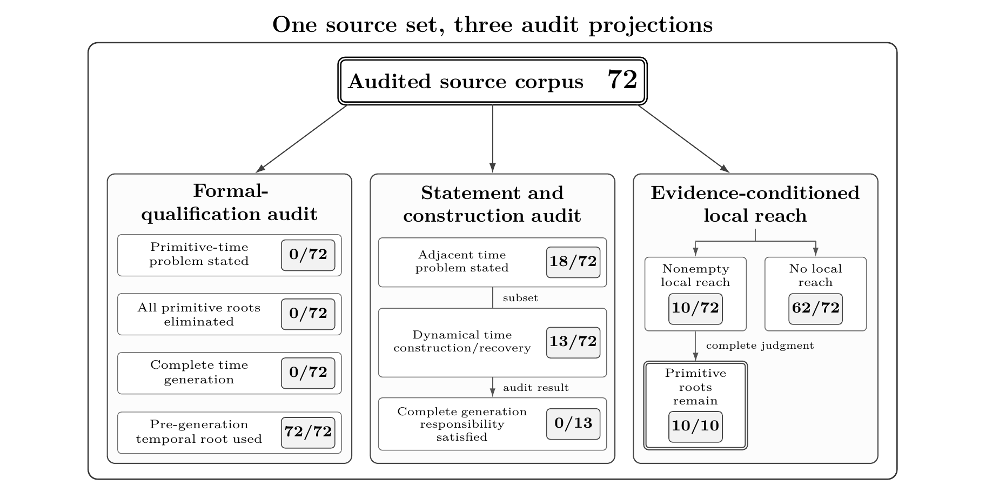

LCTR · SOURCE AUDIT
The 72 audited sources
The audit covers 72 sources spanning theories, experiments, metrological standards, and engineering from antiquity to the present. Primitive-time input remains in all 72; none generates all of the time content it uses from nontemporal physical inputs.

Source list
Source numbers correspond to the paper’s supplement.
01 Aristotle
Aristotle, Physica, Book IV, Chapters 11–14, Bekker 218b21–224a15, edited by Immanuel Bekker, Aristotelis opera, Volumen Primum (1831), and translated by Edward Hussey, Aristotle’s Physics: Books III and IV, Clarendon Press / Oxford University Press (1983; corrected reprint, 1993).
Supplement: source 1
02 Newton 1687/1729
Isaac Newton, The Mathematical Principles of Natural Philosophy, translated by Motte, edited by Chittenden, 1846 edition.
Supplement: source 2
03 Einstein 1905
A. Einstein, Zur Elektrodynamik bewegter Körper, Annalen der Physik, Vierte Folge, Band 17, 891–921 (1905), doi:10.1002/andp.19053221004.
Supplement: source 3
04 Minkowski 1908/1909
Hermann Minkowski, Raum und Zeit,
Jahresbericht der Deutschen Mathematiker-Vereinigung, Vol. 18 (1909), pp. 75–88. The lecture was delivered on September 21, 1908.Supplement: source 4
05 Einstein 1916
A. Einstein, Die Grundlage der allgemeinen Relativitätstheorie, Annalen der Physik, Vierte Folge, Band 49, 769–822 (1916).
Supplement: source 5
06 Bridgman 1927
Percy W. Bridgman, The Logic of Modern Physics, The Macmillan Company (1927).
Supplement: source 6
07 von Neumann 1932
J. von Neumann, Mathematische Grundlagen der Quantenmechanik, Springer, Berlin (1932).
Supplement: source 7
08 Curtiss 1949
Leon F. Curtiss, Measurements of Radioactivity, National Bureau of Standards Circular 476 (1949).
Supplement: source 8
09 Dirac 1958
P. A. M. Dirac, The Theory of Gravitation in Hamiltonian Form, Proceedings of the Royal Society of London. Series A, Mathematical and Physical Sciences 246(1246), 333–343 (1958), doi:10.1098/rspa.1958.0142.
Supplement: source 9
10 Pound–Rebka 1960
R. V. Pound and G. A. Rebka, Jr., Apparent Weight of Photons, Physical Review Letters 4 (1960), 337–341.
Supplement: source 10
11 ADM 1962
R. Arnowitt, S. Deser, and C. W. Misner, The Dynamics of General Relativity, in L. Witten, ed., Gravitation: An Introduction to Current Research, Chapter 7, Wiley (1962), together with the authors’ reprint, arXiv:gr-qc/0405109v1 (19 May 2004).
Supplement: source 11
12 Feynman 1963
Richard P. Feynman, Robert B. Leighton, and Matthew Sands, The Feynman Lectures on Physics, Volume I (1963).
Supplement: source 12
13 Taylor–Wheeler 1992
Edwin F. Taylor and John Archibald Wheeler, Spacetime Physics: Introduction to Special Relativity, 2nd ed., W. H. Freeman and Company, 1992.
Supplement: source 13
14 DeWitt 1967
B. S. DeWitt, Quantum Theory of Gravity. I. The Canonical Theory, Physical Review 160, 1113–1148 (1967), doi:10.1103/PhysRev.160.1113.
Supplement: source 14
15 Ehlers–Pirani–Schild 1972
J. Ehlers, F. A. E. Pirani and A. Schild, The Geometry of Free Fall and Light Propagation, General Relativity: Papers in Honour of J. L. Synge, Clarendon Press, Oxford, pp. 63–84 (1972); General Relativity and Gravitation 44, 1587–1609 (2012), doi:10.1007/s10714-012-1353-4.
Supplement: source 15
16 Hafele–Keating 1972b
J. C. Hafele and Richard E. Keating, Around-the-World Atomic Clocks: Observed Relativistic Time Gains, Science 177, 168–170 (14 July 1972).
Supplement: source 16
17 Hafele–Keating 1972a
J. C. Hafele and Richard E. Keating, Around-the-World Atomic Clocks: Predicted Relativistic Time Gains, Science 177, 166–168 (14 July 1972).
Supplement: source 17
18 Bekenstein 1973
Jacob D. Bekenstein, Black Holes and Entropy, Physical Review D 7, 2333–2346 (1973).
Supplement: source 18
19 Misner–Thorne–Wheeler 1973
Charles W. Misner, Kip S. Thorne, and John Archibald Wheeler, Gravitation, San Francisco: W. H. Freeman and Company, 1973.
Supplement: source 19
20 Hawking 1975
S. W. Hawking, Particle Creation by Black Holes, Communications in Mathematical Physics 43, 199–220 (1975).
Supplement: source 20
21 Hawking 1976
S. W. Hawking, Breakdown of Predictability in Gravitational Collapse, Physical Review D 14, 2460–2473 (1976).
Supplement: source 21
22 Bailey et al. 1977
J. Bailey et al., Measurements of Relativistic Time Dilatation for Positive and Negative Muons in a Circular Orbit, Nature 268, 301–305 (1977), DOI: 10.1038/268301a0.
Supplement: source 22
23 Rindler 1977
Wolfgang Rindler, Essential Relativity: Special, General, and Cosmological, Revised Second Edition, Springer-Verlag (1977), Chapter 2, pp. 23–53.
Supplement: source 23
24 Penrose 1979
Roger Penrose, Singularities and Time-Asymmetry, in S. W. Hawking and W. Israel, eds., General Relativity: An Einstein Centenary Survey, Cambridge University Press, pp. 581–638 (1979).
Supplement: source 24
25 Hartle–Hawking 1983
J. B. Hartle and S. W. Hawking, Wave Function of the Universe, Physical Review D 28, pp. 2960–2975 (1983).
Supplement: source 25
26 Page–Wootters 1983
Don N. Page and William K. Wootters, Evolution without Evolution: Dynamics Described by Stationary Observables, Physical Review D 27, pp. 2885–2892 (1983).
Supplement: source 26
27 Bombelli–Lee–Meyer–Sorkin 1987
Luca Bombelli, Joohan Lee, David Meyer and Rafael D. Sorkin, Space-Time as a Causal Set, Physical Review Letters 59, pp. 521–524 (1987).
Supplement: source 27
28 Weinberg 1989
Steven Weinberg, The Cosmological Constant Problem, Reviews of Modern Physics 61, pp. 1–23 (1989), DOI: 10.1103/RevModPhys.61.1.
Supplement: source 28
29 Isham 1993
C. J. Isham, Canonical Quantum Gravity and the Problem of Time, NATO ASI Series C 409, pp. 157–287 (1993); arXiv:gr-qc/9210011.
Supplement: source 29
30 Kuchař 1992
Karel V. Kuchař, Time and Interpretations of Quantum Gravity, Proceedings of the 4th Canadian Conference on General Relativity and Relativistic Astrophysics, World Scientific (1992), pp. 211–314.
Supplement: source 30
31 Lebowitz 1993
Joel L. Lebowitz, Boltzmann’s Entropy and Time’s Arrow, Physics Today 46(9), pp. 32–38 (1993), DOI: 10.1063/1.881363.
Supplement: source 31
32 Page 1993
Don N. Page, Information in Black Hole Radiation, arXiv:hep-th/9306083v2 (1993).
Supplement: source 32
33 Barbour 1994 I
Julian B. Barbour, The Timelessness of Quantum Gravity: I. The Evidence from the Classical Theory, Classical and Quantum Gravity 11, 2853–2873 (1994).
Supplement: source 33
34 Barbour 1994 II
Julian B. Barbour, The Timelessness of Quantum Gravity: II. The Appearance of Dynamics in Static Configurations, Classical and Quantum Gravity 11, 2875–2897 (1994).
Supplement: source 34
35 Connes–Rovelli 1994
A. Connes and C. Rovelli, Von Neumann algebra automorphisms and
time-thermodynamics relation in general covariant quantum theories, Classical and Quantum Gravity 11, 2899–2918 (1994), doi:10.1088/0264-9381/11/12/007.Supplement: source 35
36 Headley–Clayton–Reed 1996
C. Headley, J. B. Clayton, and W. A. Reed, Methods of Suppressing Stimulated Brillouin Scattering in Optical Fibers by Manipulation of the Fiber Properties (1996).
Supplement: source 36
37 Maldacena 1998
Juan M. Maldacena, The Large N Limit of Superconformal Field Theories and Supergravity, Advances in Theoretical and Mathematical Physics, Vol. 2 (1998), pp. 231–252, arXiv:hep-th/9711200v3.
Supplement: source 37
38 Perlmutter et al. 1999
S. Perlmutter et al., Measurements of Omega and Lambda from 42 High-Redshift Supernovae, The Astrophysical Journal 517, 565–586 (1999).
Supplement: source 38
39 Riess et al. 1998
Adam G. Riess et al., Observational Evidence from Supernovae for an Accelerating Universe and a Cosmological Constant, The Astronomical Journal 116 (1998), 1009–1038.
Supplement: source 39
40 Adler 2003
Stephen L. Adler, Why Decoherence Has Not Solved the Measurement Problem: A Response to P. W. Anderson, Studies in History and Philosophy of Modern Physics 34, 135–142 (2003), DOI: 10.1016/S1355-2198(02)00086-2; arXiv:quant-ph/0112095v3.
Supplement: source 40
41 Philip W. Anderson 2001
Philip W. Anderson, Science: A “Dappled World” or a “Seamless Web”?, Studies in History and Philosophy of Modern Physics 32(3), 487–494 (2001), DOI: 10.1016/S1355-2198(01)00011-9.
Supplement: source 41
42 Clark 2001
Charles W. Clark, Effects of Configuration Interaction on Intensities and Phase Shifts, NIST Special Publication 958 (2001).
Supplement: source 42
43 Rovelli 2002
Carlo Rovelli, Partial Observables, Physical Review D 65, 124013 (2002), DOI: 10.1103/PhysRevD.65.124013.
Supplement: source 43
44 Zurek 2003
Wojciech H. Zurek, Decoherence, Einselection, and the Quantum Origins of the Classical, Reviews of Modern Physics 75, 715–775 (2003), DOI: 10.1103/RevModPhys.75.715.
Supplement: source 44
45 Davis–Lineweaver 2004
T. M. Davis and C. H. Lineweaver, Expanding Confusion: Common Misconceptions of Cosmological Horizons and the Superluminal Expansion of the Universe, Publications of the Astronomical Society of Australia 21, 97–109 (2004), doi:10.1071/AS03040.
Supplement: source 45
46 Schlosshauer 2005
Maximilian Schlosshauer, Decoherence, the Measurement Problem, and Interpretations of Quantum Mechanics, Reviews of Modern Physics 76, 1267–1305 (2005), DOI: 10.1103/RevModPhys.76.1267, arXiv:quant-ph/0312059v4.
Supplement: source 46
47 Kiefer 2005
Claus Kiefer, Quantum Cosmology and the Arrow of Time, Brazilian Journal of Physics 35, 296–299 (2005); arXiv:gr-qc/0502016v1, pp. 1–9.
Supplement: source 47
48 Grøn–Elgarøy 2007
Øyvind Grøn and Øystein Elgarøy, Is space expanding in the Friedmann universe models?, American Journal of Physics 75, 151–157 (2007); arXiv:astro-ph/0603162v2, pp. 1–18.
Supplement: source 48
49 Ryu–Takayanagi 2006
Shinsei Ryu and Tadashi Takayanagi, Holographic Derivation of Entanglement Entropy from AdS/CFT, Physical Review Letters 96, 181602 (2006), DOI: 10.1103/PhysRevLett.96.181602, arXiv:hep-th/0603001v2.
Supplement: source 49
50 Francis–Barnes–James–Lewis 2007
Matthew J. Francis, Luke A. Barnes, J. Berian James and Geraint F. Lewis, Expanding Space: the Root of all Evil?, Publications of the Astronomical Society of Australia 24(2), 95–102 (2007).
Supplement: source 50
51 Cook–Burns 2009
Richard J. Cook and M. Shane Burns, Interpretation of the cosmological metric, American Journal of Physics 77, 59–66 (2009), doi:10.1119/1.2987790; arXiv:0803.2701v2, pp. 1–20.
Supplement: source 51
52 Peacock 2008
J. A. Peacock, A diatribe on expanding space, arXiv:0809.4573v1 (2008), pp. 1–4.
Supplement: source 52
53 Bunn–Hogg 2009
E. F. Bunn and D. W. Hogg, The kinematic origin of the cosmological redshift, American Journal of Physics 77, 688–694 (2009), doi:10.1119/1.3129103; arXiv:0808.1081v2.
Supplement: source 53
54 Kiefer 2009
Claus Kiefer, Does Time Exist in Quantum Gravity?, arXiv:0909.3767v1 [gr-qc] (2009).
Supplement: source 54
55 Rovelli 2011
Carlo Rovelli, Forget Time, Foundations of Physics 41, 1475–1490 (2011), DOI: 10.1007/s10701-011-9561-4; arXiv:0903.3832v3.
Supplement: source 55
56 Van Raamsdonk 2010
Mark Van Raamsdonk, Building up Spacetime with Quantum Entanglement, General Relativity and Gravitation 42, 2323–2329 (2010), DOI: 10.1007/s10714-010-1034-0.
Supplement: source 56
57 Greene The Illusion of Time
the PBS/NOVA program The Fabric of the Cosmos: The Illusion of Time (2011), hosted and principally narrated by Brian Greene.
Supplement: source 57
58 Wolf et al. 2011
P. Wolf, L. Blanchet, C. J. Bordé, S. Reynaud, C. Salomon, and C. Cohen-Tannoudji, Does an atom interferometer test the gravitational redshift at the Compton frequency? (2011).
Supplement: source 58
59 Anderson 2012
Edward Anderson, Problem of Time in Quantum Gravity, Annalen der Physik 524, 757–786 (2012), doi:10.1002/andp.201200147; arXiv:1206.2403v2.
Supplement: source 59
60 Ellis 2012
G. F. R. Ellis, Space time and the passage of time, arXiv:1208.2611v4 [gr-qc] (2012).
Supplement: source 60
61 Tong 2013
David Tong, Dynamics and Relativity (2013).
Supplement: source 61
62 Lewis 2016
Geraint F. Lewis, On the Relativity of Redshifts: Does Space Really “Expand”?, Australian Physics, Vol. 53, No. 3 (2016), pp. 95–100, arXiv:1605.08634v1.
Supplement: source 62
63 Smolin 2018/2020
Lee Smolin, Temporal Relationalism, arXiv:1805.12468v1 (2018); Beyond Spacetime, Cambridge University Press (2020), pp. 143–175, doi:10.1017/9781108655705.010.
Supplement: source 63
64 BIPM SI 2019/2026
Bureau International des Poids et Mesures, The International System of Units (SI), 9th edition, version 4.01, June 2026, doi:10.59161/AUEZ1291; Consultative Committee for Time and Frequency, Mise en pratique for the definition of the second in the SI, 20 May 2019.
Supplement: source 64
65 ESA 2019
European Space Agency, Clocks, gravity, and the limits of relativity, 23 May 2019.
Supplement: source 65
66 NASA/JPL–Caltech 2020
NASA Space Place / NASA/JPL–Caltech, Is Time Travel Possible?, 30 April 2020.
Supplement: source 66
67 Pössel 2021
Markus Pössel, From Light Clocks to Time Dilation, Einstein Online 13 (2021), 1004.
Supplement: source 67
68 PDG 2023 Resonances
D. M. Asner, C. Hanhart, and M. Mikhasenko, 50. Resonances (2023).
Supplement: source 68
69 NIST 2025
National Institute of Standards and Technology, Putting Einstein to the Test, published on April 3, 2025 and updated on April 17, 2025.
Supplement: source 69
70 Feynman 1995
Richard P. Feynman, Fernando B. Morinigo, and William G. Wagner, edited by Brian Hatfield, Feynman Lectures on Gravitation, Addison–Wesley, 1995. The text records lectures delivered at Caltech in 1962–63.
Supplement: source 70
71 Narlikar 2010
Jayant V. Narlikar, An Introduction to Relativity, Cambridge University Press, 2010.
Supplement: source 71
72 Heisenberg 1958
Werner Heisenberg, Physics and Philosophy: The Revolution in Modern Science, Harper & Brothers, 1958.
Supplement: source 72